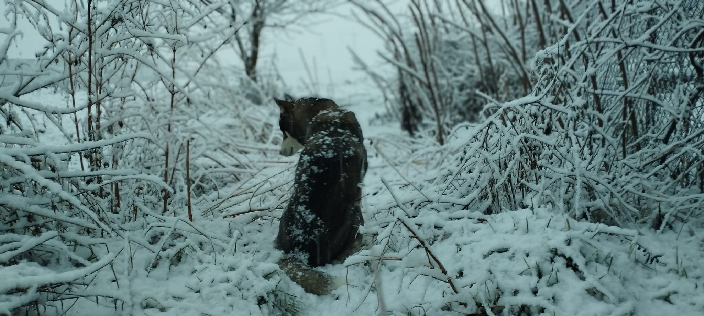

Uchwycone chwile: magia fotografii
Od pierwszego naciśnięcia spustu migawki aż po postprodukcję – fotografia daje mi możliwość zatrzymania ulotnych emocji i ukazania piękna otaczającego nas świata. W swojej pracy łączę kreatywne podejście z techniczną precyzją, aby każdy kadr opowiadał unikalną historię.
Poniżej znajdziesz kilka moich ulubionych ujęć oraz krótki opis procesu, dzięki któremu powstają te wyjątkowe fotografie.
{kind=link}
{kind=link}
{kind=link}
Proces tworzenia fotografii obejmuje:
- Inspiracja: poszukiwanie motywów i tematów, które przyciągają uwagę – od natury po architekturę.
- Praca w terenie: odpowiedni dobór sprzętu, oświetlenia i kadrów, by uchwycić atmosferę chwili.
- Selekcja i edycja: wybór najlepszych ujęć oraz subtelna postprodukcja (korekta kolorów, balans bieli, kontrast).
- Prezentacja: druk na wysokiej jakości papierze fotograficznym lub publikacja online.
Wybrane projekty fotograficzne:
{kind=link}
{kind=link}
{kind=link}
Te i wiele innych prac powstawało w rozmaitych warunkach – od pełnego słońca po nocne długie czasy naświetlania. Każdy projekt jest dla mnie nowym wyzwaniem i przygodą, którą pragnę zapisać w kadrze.
Zatrzymaj wyjątkowe chwile w obiektywie
Marzysz o profesjonalnej sesji, która pokaże Twoje prawdziwe emocje? A może chcesz uwiecznić ważne wydarzenie? Wspólnie zrealizujemy koncepcję i zadbamy o każdy detal – od wyboru miejsca po artystyczną postprodukcję.
Umów się na sesję